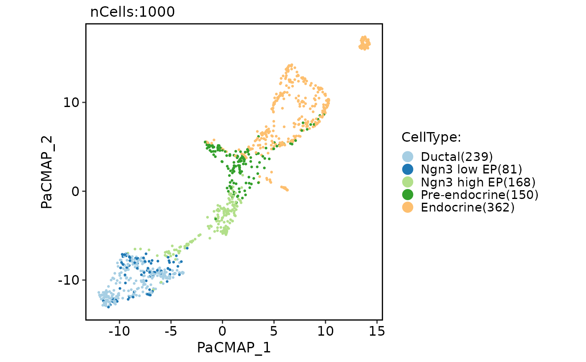

Run PaCMAP (Pairwise Controlled Manifold Approximation)
Usage
RunPaCMAP(object, ...)
# S3 method for Seurat
RunPaCMAP(
object,
reduction = "pca",
dims = NULL,
features = NULL,
assay = NULL,
slot = "data",
n_components = 2,
n.neighbors = NULL,
MN_ratio = 0.5,
FP_ratio = 2,
distance_method = "euclidean",
lr = 1,
num_iters = 450L,
apply_pca = TRUE,
init = "random",
reduction.name = "pacmap",
reduction.key = "PaCMAP_",
verbose = TRUE,
seed.use = 11L,
...
)
# S3 method for default
RunPaCMAP(
object,
assay = NULL,
n_components = 2,
n.neighbors = NULL,
MN_ratio = 0.5,
FP_ratio = 2,
distance_method = "euclidean",
lr = 1,
num_iters = 450L,
apply_pca = TRUE,
init = "random",
reduction.key = "PaCMAP_",
verbose = TRUE,
seed.use = 11L,
...
)Arguments
- object
An object. This can be a Seurat object or a matrix-like object.
- ...
Additional arguments to be passed to the pacmap.PaCMAP function.
- reduction
A character string specifying the reduction to be used. Default is "pca".
- dims
An integer vector specifying the dimensions to be used. Default is NULL.
- features
A character vector specifying the features to be used. Default is NULL.
- assay
A character string specifying the assay to be used. Default is NULL.
- slot
A character string specifying the slot name to be used. Default is "data".
- n_components
An integer specifying the number of PaCMAP components. Default is 2.
- n.neighbors
An integer specifying the number of neighbors considered in the k-Nearest Neighbor graph. Default to 10 for dataset whose sample size is smaller than 10000. For large dataset whose sample size (n) is larger than 10000, the default value is: 10 + 15 * (log10(n) - 4).
- MN_ratio
A numeric value specifying the ratio of the ratio of the number of mid-near pairs to the number of neighbors. Default is 0.5.
- FP_ratio
A numeric value specifying the ratio of the ratio of the number of further pairs to the number of neighbors. Default is 2.
- distance_method
A character string specifying the distance metric to be used. Default is "euclidean".
- lr
A numeric value specifying the learning rate of the AdaGrad optimizer. Default is 1.
- num_iters
An integer specifying the number of iterations for PaCMAP optimization. Default is 450.
- apply_pca
A logical value indicating whether pacmap should apply PCA to the data before constructing the k-Nearest Neighbor graph. Using PCA to preprocess the data can largely accelerate the DR process without losing too much accuracy. Notice that this option does not affect the initialization of the optimization process. Default is TRUE.
- init
A character string specifying the initialization of the lower dimensional embedding. One of "pca" or "random". Default is "random".
- reduction.name
A character string specifying the name of the reduction to be stored in the Seurat object. Default is "pacmap".
- reduction.key
A character string specifying the prefix for the column names of the PaCMAP embeddings. Default is "PaCMAP_".
- verbose
A logical value indicating whether to print verbose output. Default is TRUE.
- seed.use
An integer specifying the random seed to be used. Default is 11.
Examples
pancreas_sub <- Seurat::FindVariableFeatures(pancreas_sub)
pancreas_sub <- RunPaCMAP(object = pancreas_sub, features = Seurat::VariableFeatures(pancreas_sub))
CellDimPlot(pancreas_sub, group.by = "CellType", reduction = "pacmap")
